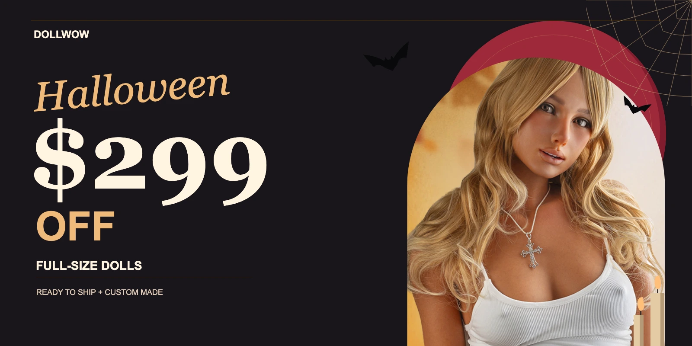

Halloween, with a little bite.
DOL-217 · Concept approval only01 · Banner direction

One desktop composition for approval. The supplier photograph is preserved; a separately composed mobile banner follows after approval. Code, copy button and terms will sit below the artwork.
02 · Walking and turning
Open the interactive motion sample · Six on desktop, four on mobile. This is an isolated motion study, not the storefront placement test.